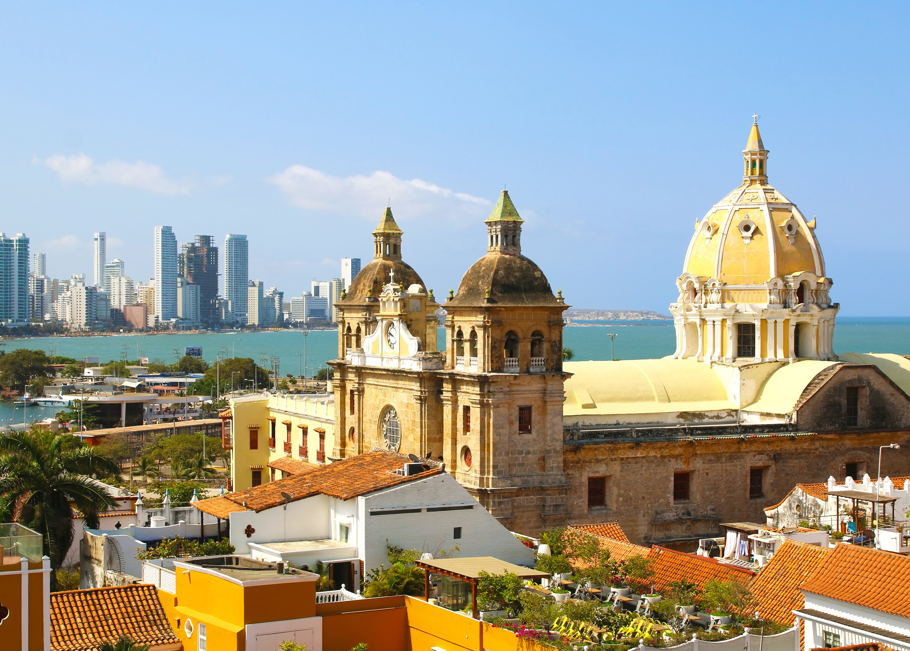
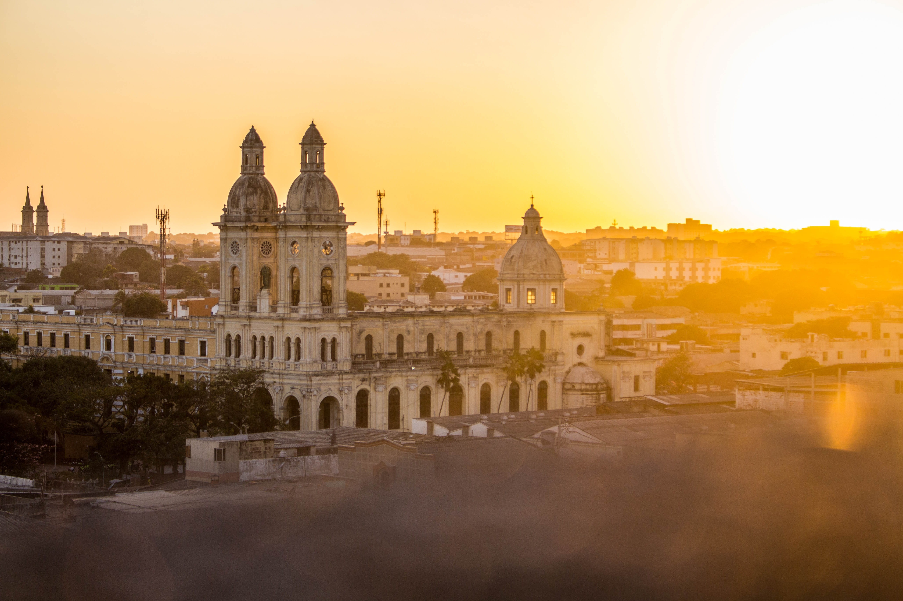

Experience the vibrant soul of Colombia on a 7-night journey along the Magdalena River. Dance to the rhythms of cumbia and vallenato during a private Carnaval celebration in Barranquilla. Savor Colombia's rich coffee and witness its incredible wildlife and lush landscapes. Meet the warm people who bring this colorful culture to life on an unforgettable AmaWaterways voyage.
Learn More
Immerse yourself in the wonders of Colombia, the "Land of a Thousand Rhythms," as you journey along the magnificent Magdalena River. Explore the streets of Palenque, the first free city in Colombia. Delight in the colorful neighborhood of Getsemaní in Cartagena. Discover how Spanish and pre-colonial cultures combined to bring us the music, minds, and culture that shape the country today.
Learn More